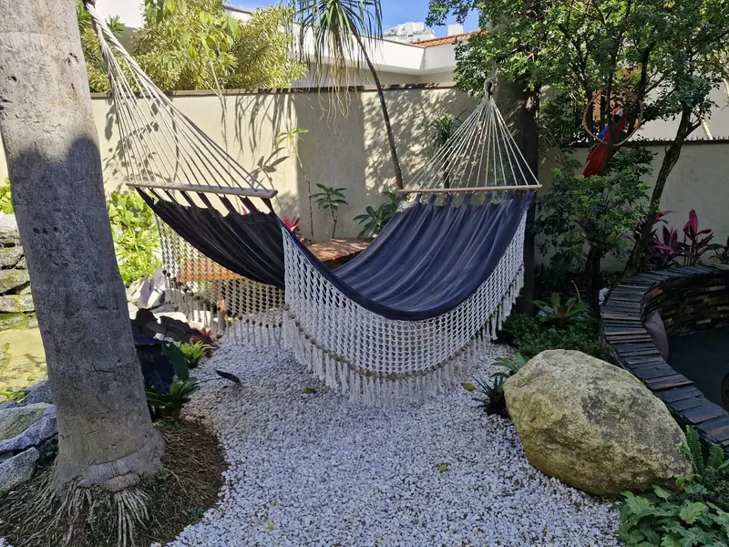
Descansar
Um espaço para desacelerar. Entre o lago, os jardins e ambientes tranquilos, a casa oferece uma pausa especial dentro de São Paulo.

Uma casa cercada por natureza em Perdizes, para descansar, celebrar e sentir a cidade de outro jeito.
Em meio à cidade de São Paulo, existe uma residência onde o tempo desacelera.
A Mansão do Lago combina arquitetura, natureza e hospitalidade em um ambiente criado para receber pessoas que valorizam experiências autênticas.
Entre jardins, água e espaços de convivência, cada detalhe convida a aproveitar o momento.
A experiência

Um espaço para desacelerar. Entre o lago, os jardins e ambientes tranquilos, a casa oferece uma pausa especial dentro de São Paulo.
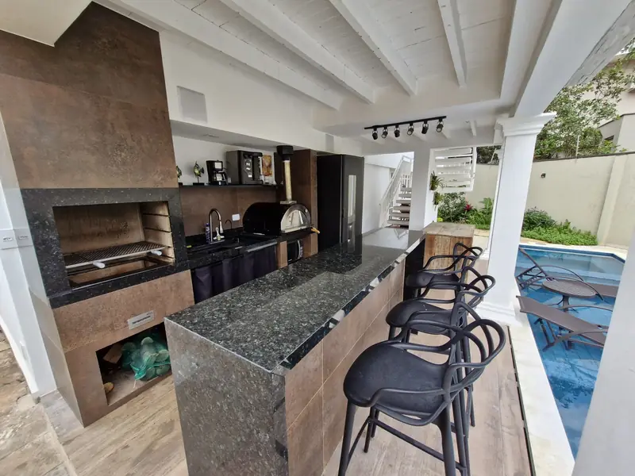
Momentos que merecem ser compartilhados. Da piscina ao pub inglês, da área gourmet à s varandas.
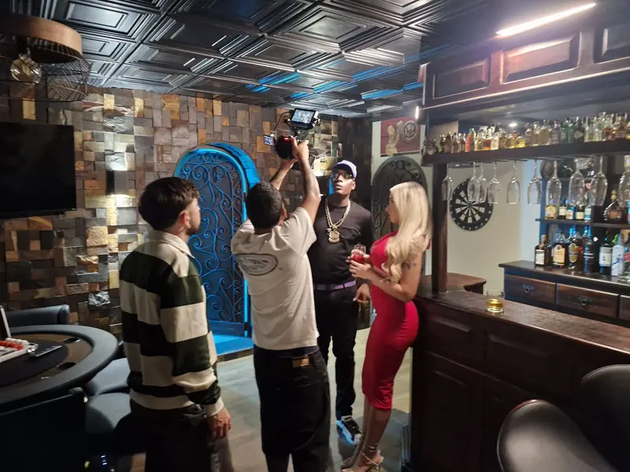
Um cenário com personalidade. Arquitetura, natureza e ambientes para fotografias, vídeos e produções especiais.
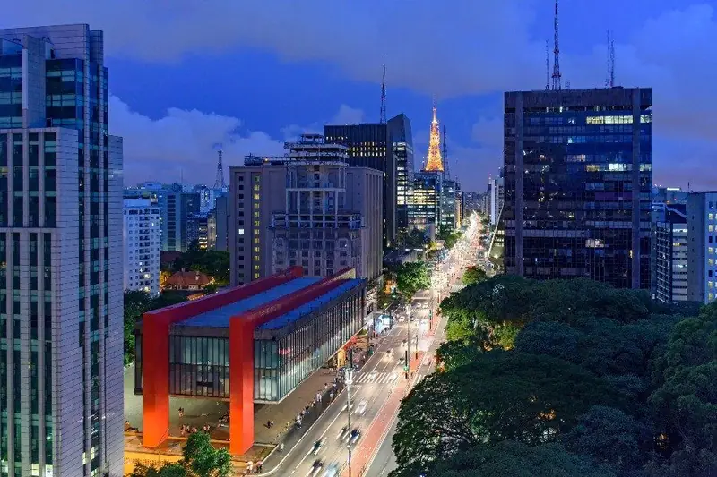
Uma base tranquila em Perdizes para descobrir a cidade e retornar a um ambiente de calma e acolhimento.
Hospedagem
Suíte privativa para até cinco pessoas, com piscina, academia, área gourmet, lago e jardins. Escolha as datas e fale conosco pelo WhatsApp.
Reserva direta a partir de R$ 389 por noite
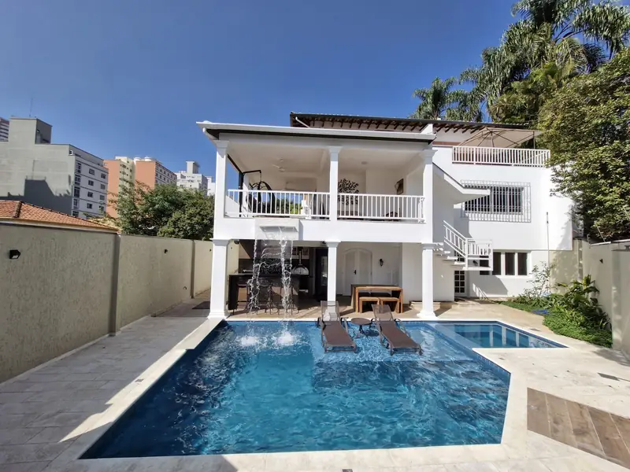
A casa
A Mansão do Lago nasceu de uma história construída ao longo de décadas.
A propriedade, originalmente criada na década de 1950, foi cuidadosamente transformada pelos atuais proprietários para unir conforto, natureza e arquitetura.
Hoje, continua sendo uma residência familiar, compartilhando apenas alguns de seus ambientes mais especiais com pessoas que desejam viver essa experiência.
Os ambientes
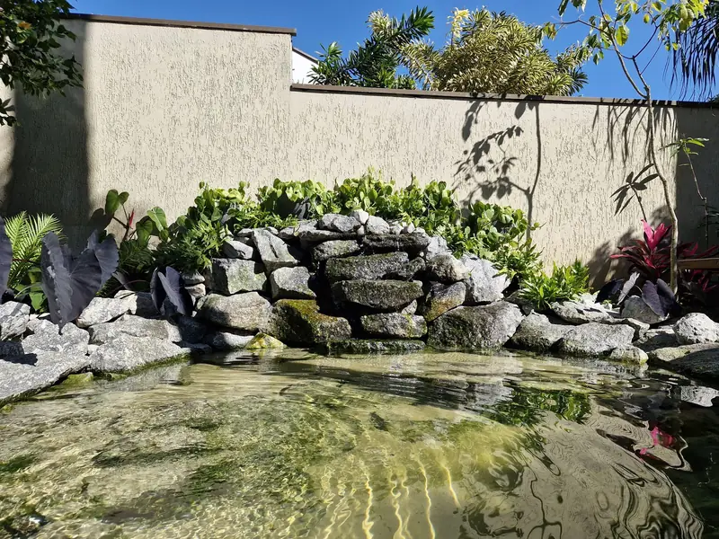
O ponto de encontro entre natureza e tranquilidade.
Um espaço para contemplar, respirar e desacelerar.
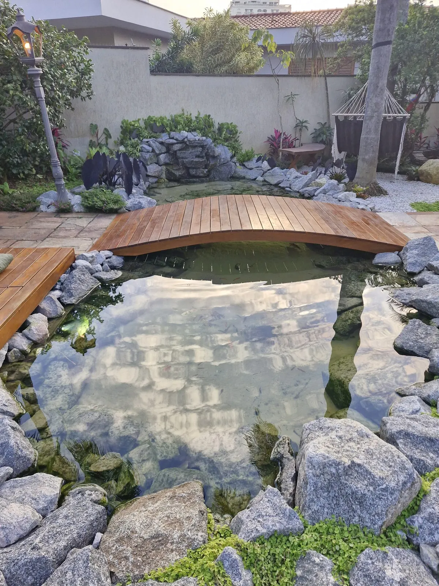
A transição entre a cidade e um novo ritmo.
Um caminho que marca a chegada a uma experiência diferente.
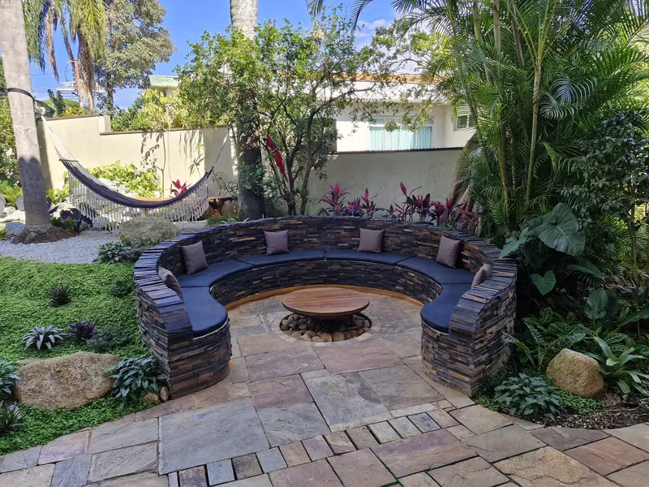
Um ambiente vivo, cercado por verde, pensado para caminhadas, conversas e momentos de pausa.
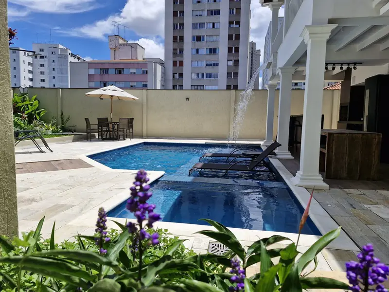
Espaços para relaxar durante o dia e prolongar momentos especiais ao final da tarde.
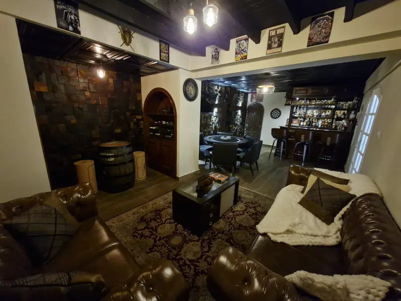
Um ambiente criado para boas conversas.
Um espaço reservado para apreciar momentos tranquilos, com possibilidade de experiências especiais de degustação de whiskies single malt sob consulta.
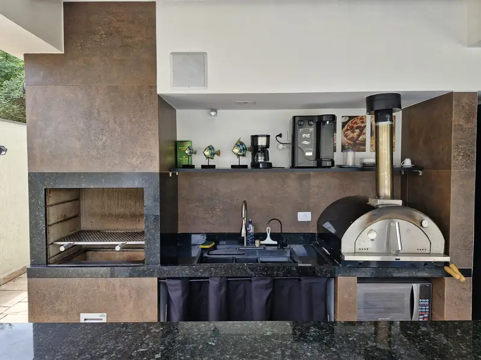
Um convite para compartilhar.
Um ambiente pensado para refeições, encontros e celebrações.
A casa em vídeo
Vídeos curtos da propriedade, entrada, lago, jardins, pub e academia. Não são eventos nem produções.
Avaliações
Notas e destaques do nosso anúncio no Airbnb, hospitalidade em uma residência real em Perdizes.
Hospedagem
Para preservar a essência da casa, oferecemos apenas uma suíte para hóspedes.
Uma acomodação especial para até cinco pessoas, com cama de casal, sofá-cama e bicama.
Você usa a suíte com privacidade e compartilha as áreas de lazer: piscina, lago, pub, jardins e mais.
Reserva direta a partir de R$ 389 por noite
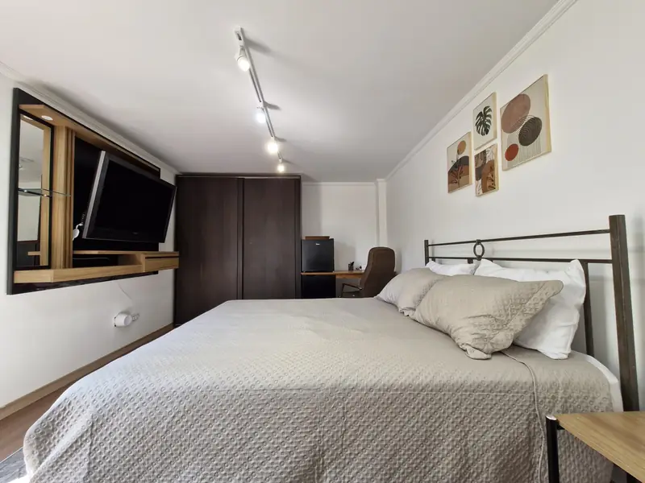
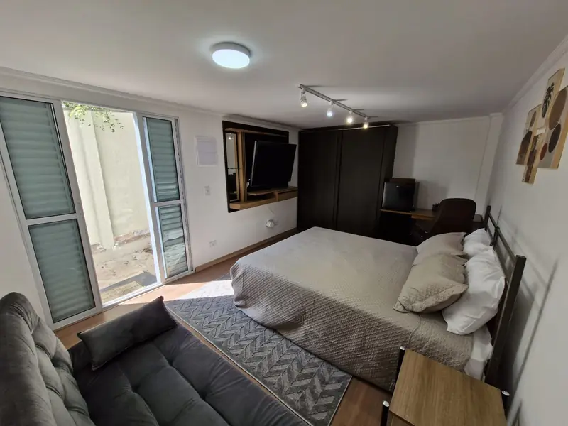
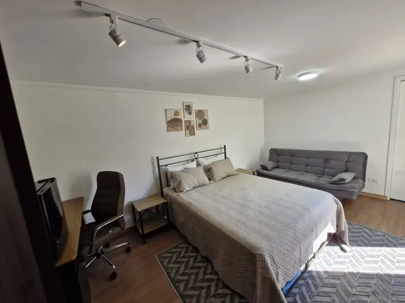
A anfitriã
Anfitriã
Hospitalidade com olhar de quem vive a casa.
A Mansão do Lago nasceu do desejo de compartilhar um lugar especial.
Formada em Turismo e com experiências internacionais, Cintia traz para a casa seu olhar de hospitalidade, cuidado e atenção aos detalhes.
Ao lado da família, recebe cada hóspede de forma próxima e personalizada, acolhimento, tranquilidade e sofisticação natural.
Acreditamos que os melhores lugares são aqueles onde as pessoas se sentem verdadeiramente bem-vindas.
Conversar com os anfitriões
Pequenas celebrações e encontros cuidadosamente selecionados, em um cenário residencial único.
Conhecer eventos
Locação para fotografias, comerciais e produções, inclusive ambientes internos mediante consulta.
Conhecer filmagensAlém da hospedagem, a Mansão do Lago recebe pequenas celebrações e produções audiovisuais. Cada projeto é avaliado individualmente para preservar a essência da casa.
Localização
Localizada em Perdizes, um dos bairros mais tradicionais de São Paulo, a Mansão do Lago oferece uma combinação rara: a tranquilidade de uma residência cercada por natureza e a proximidade dos principais pontos da cidade.
Próxima a referências como Allianz Parque e Pacaembu, é uma alternativa especial para quem busca uma estadia diferenciada em São Paulo.
O mapa mostra uma área aproximada (cerca de dois quarteirões), para preservar a privacidade da residência.
Perdizes, São Paulo, localização aproximada
Conte-nos as datas e o que busca em São Paulo. Respondemos pelo WhatsApp, com carinho e sem pressa, e cuidamos de cada detalhe da sua estadia.